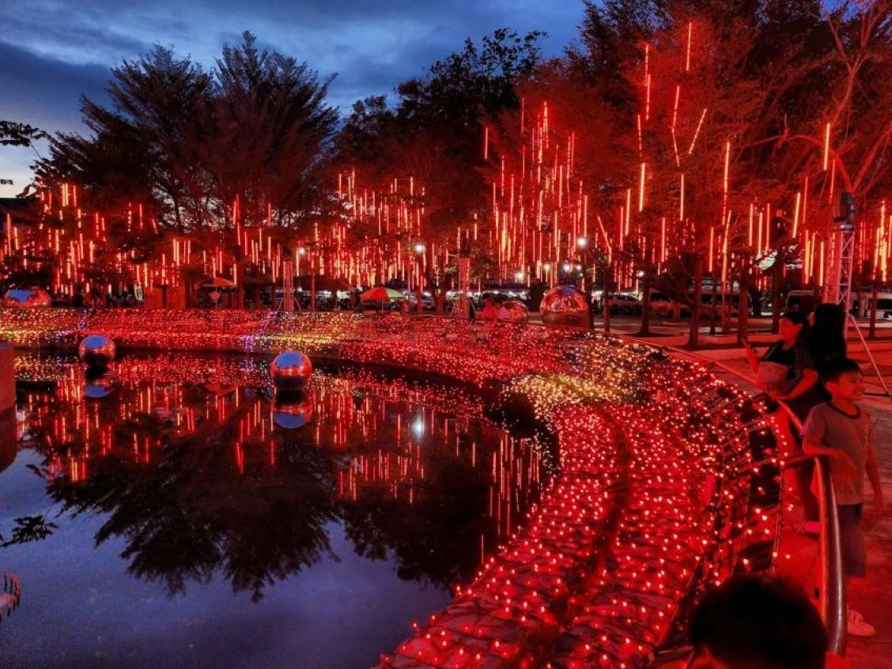
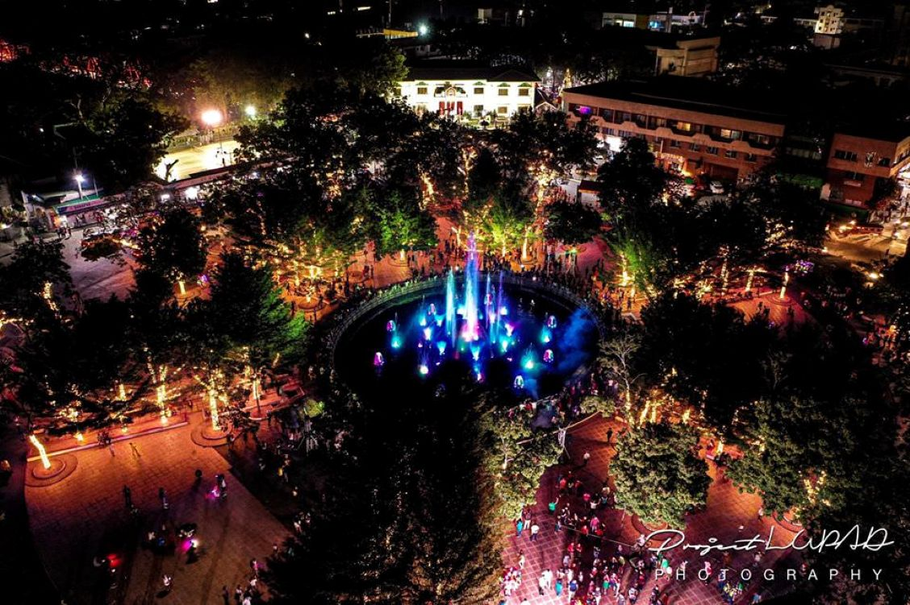

Gaston Park


Stepped in history and serves as a vibrant city landmark, Gaston Park is a must-visit town plaza located in the historic center of Cagayan de Oro. Originally serving as the battleground for the Battle of Cagayan de Misamis in 1900, this public park has transformed into a peaceful town square. Positioned right next to the iconic Saint Augustine Metropolitan Cathedral and the local city museum, it offers travelers a perfect first stop to immerse themselves in the city's rich past while enjoying a breezy afternoon stroll.